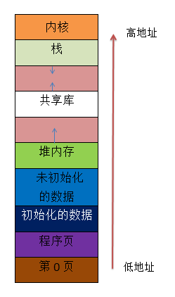
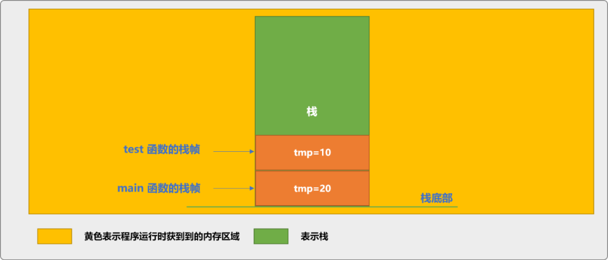
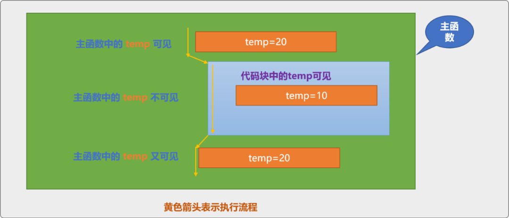
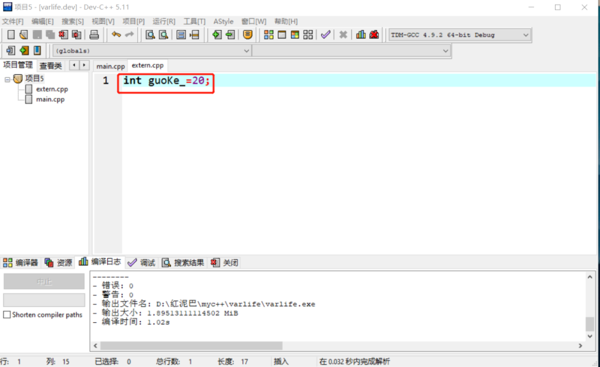
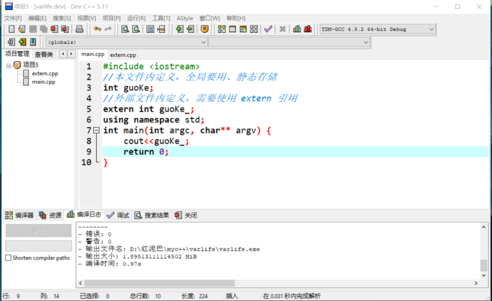
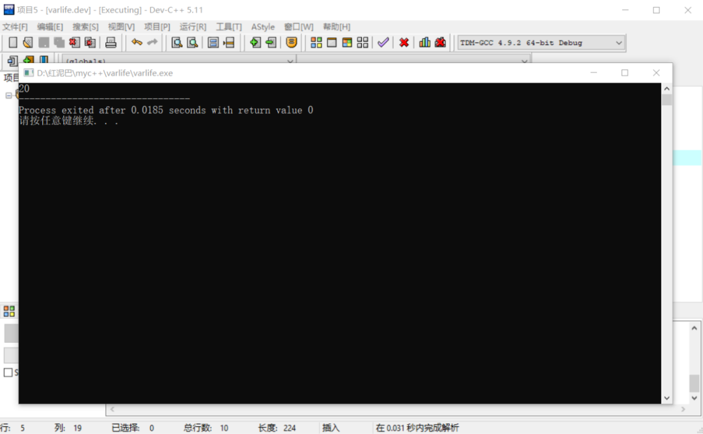
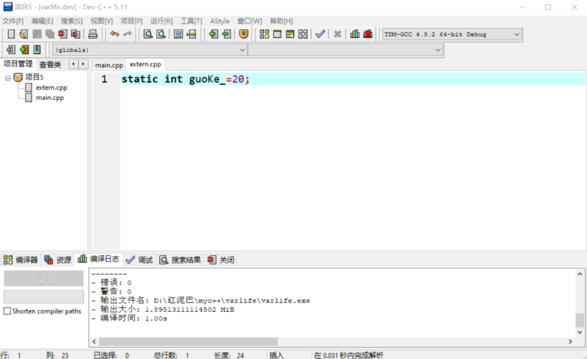
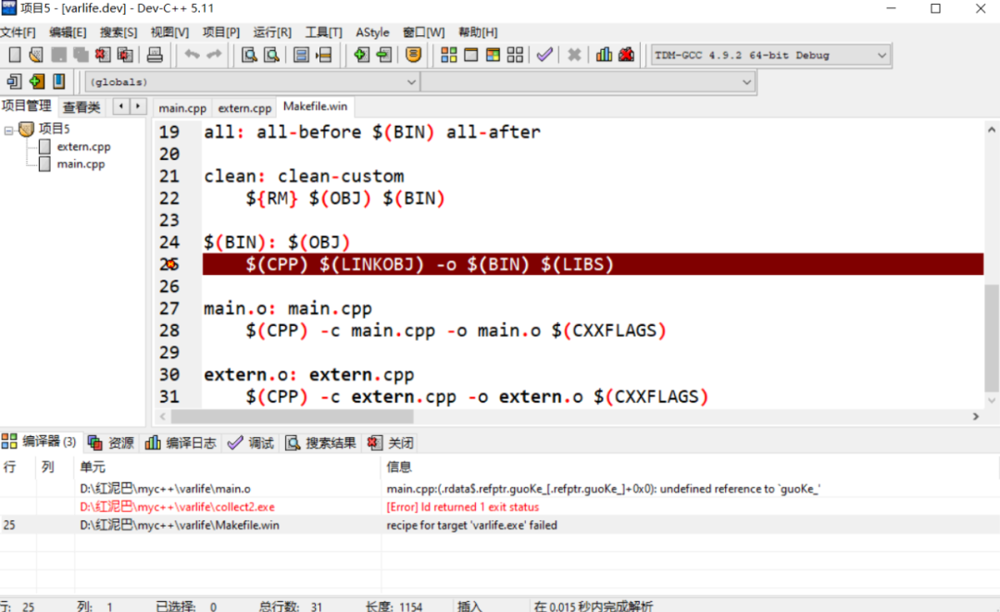
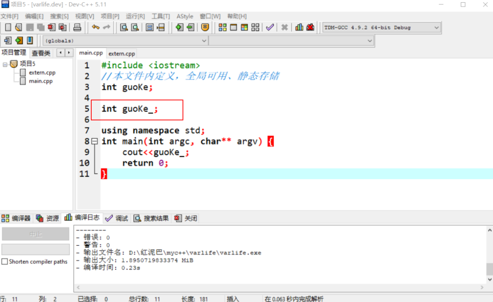
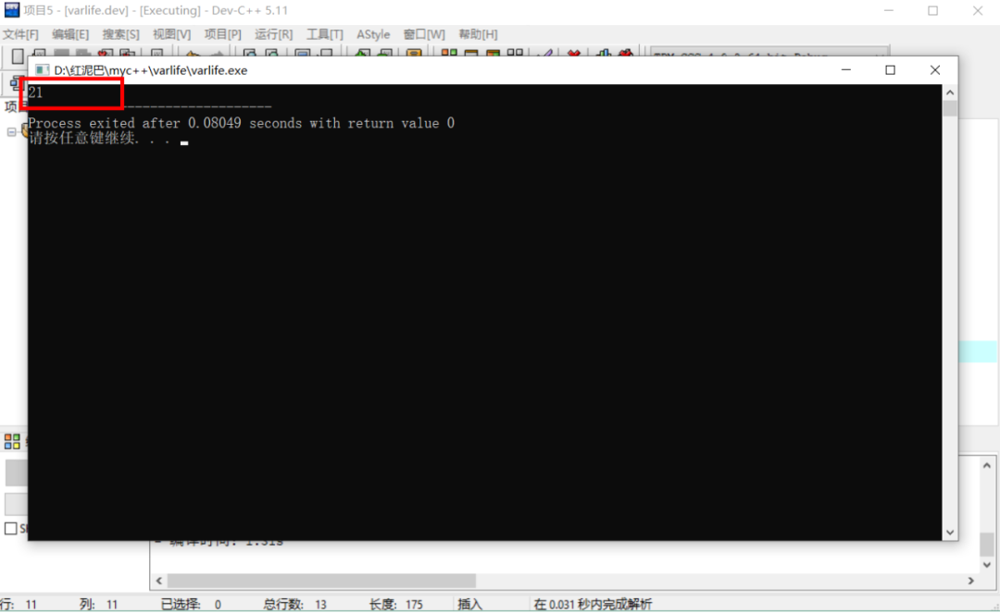

C++ 变量的生命周期和作用域
1. 前言
什么是变量的生命周期？
从变量被分配空间到空间被收回的这一个时间段，称为变量的生命周期。
什么是变量的作用域？
在变量的生命周期内，其存储的数据并不是在任何地方都能使用，变量能使用的范围，称为变量的作用域。
广义而言，可以根据变量的声明位置，把变量分为全局（全局作用域）变量和局部（局部作用域）变量：
- 全局变量：在一个较大的范围之内声明的变量。如在源代码文件中声明的变量能在整个文件中使用（
文件级别作用域），在类中声明的变量能在类中使用（类级别作用域）、名称空间中声明的变量可以在整个名称空间内使用。除此之外，还有程序级别作用域，变量能在整个程序中使用。 - 局部变量： 如函数体内声明的变量（作用域函数级别）、代码块内声明的变量（代码块级别的作用域）。
变量的声明位置也决定了变量在内存中的存储位置，如函数体内声明的局部变量一般会存储在栈中，如类中声明的变量存储在堆中，文件中声明的全局变量存储在全局\静态存储区。
程序运行时，会向OS申请一块内存区域用来存储程序运行时的指令和数据。C++运行系统会对分配到的内存区域进行管理。相当于OS给的是毛坯房，自己还需要装修一下，专业叫内存管理。其中有 2 个很重要的隔间：
- 栈：这里的栈有
2层意思，一是对一个特定内存区域的命名，另一层含义是存储数据时遵守栈数据结构理论，按先进后出原则。可以认为此隔间只有一个门：数据的进与出都是走这个门。
函数的参数、函数体内声明的变量都会存储在栈中，栈的特点是由运行时系统自动分配与释放，另栈分配空间是向高地址向低地址扩张。
- 堆：堆是一个自由、开放式存储空间。开发者可以根据逻辑需要随时申请，但开发者需要根据实际情况手动释放。堆的使用是由低地址向高地址扩张。

下面继续深入聊聊变量的存储类型对生命周期和作用域的影响。
2. 存储类型
生命周期指数据在内存中保留的时间，也可称为存储持续性。
变量的生命周期和变量的作用域是有区别的。就如同你家里养的花开了 1 个月，但只有你的家里人才能闻到花香，花园里的花只开了 1 天，但是，公园里的所有人都能闻到花香。
生命周期相当于你在某一个公司工作了近
10年，作用域则相当于你一直服务于开发部。可以说变量的生命周期较长，其能使用的范围可能很广，但不能说数据在内存中存储的时间越久，其能使用的范围就一定很广。
作用域一定要在变量的生命周期之内讨论才有意义。
C++有如下几种存储方案，存储方案不同，其变量生命周期也不一样。
-
自动存储：如函数定义时声明的变量就属于自动存储类别。生命周期较短，仅在函数被调用到函数执行结束后其内存就会被释放。
-
静态存储：在函数定义外声明的变量、使用关键字
static声明的变量都为静态存储类别。它们在整个程序运行过程中都存在。 -
线程存储：在并发、并行环境中，如果变量使用关键字
thread_local声明，则生命周期和所依附的线程生命周期同步。
本文不会对此存储类别展开细聊。
- 动态存储：使用
new运算符声明的变量，其存储块一般在堆中，如果开发者不显示释放（delete）会一直存在，直到程序结束。
本文不会对此存储类别展开细聊。
2.1 自动存储
函数体内声明的变量属于自动存储类别。变量在函被调用时生命开始（分配空间），函数执行完毕后，变量的生命结束（回收空间）。此类型的变量的特点：
局部的。- 没有共享性。
共享性：指变量中的数据是否能让其它的代码可见、可用。
局部变量的
局部的含义可以理解为不共享，作用域范围只供自己使用，。
如下代码：
#include <iostream>
void test(){
int tmp=10;
}
int main(int argc, char** argv) {
int tmp=20;
test();
return 0;
}
在函数 test中声明的 tmp变量只有在test函数被调用时才会分配空间，当函数调用结束后自动释放。
同时main中tmp变量也局部变量。虽然 test和main函数中有同名的 tmp变量，两者是互不可见的，或者说两者存在于 2 个不同的时空中。
为什么会互不可见？
原因可用函数的底层调用机制解释：
C++调用函数时，会在栈中为函数分配一个区域用来存储此函数有关的数据，称这个区域叫栈帧。- 每一个函数所分配到的
栈帧是隔离的，且按先调用先分配的栈原则。
上述的情形相当于 2 个家里都有一个叫 temp 的家人。即使同名，但存在不同的空间中，彼此之间是无法可见的。

再聊一下变量间的隐藏性。
如下代码，两次输出的结果分别是多少？
#include <iostream>
using namespace std;
int main(int argc, char** argv) {
int temp=20;
{
int temp=10;
cout<<"代码块中输出:"<<temp<<endl;
}
cout<<"代码块外输出:"<<temp<<endl;
return 0;
}
输出结果是：
什么是隐藏性？
main函数中的第一次声明的 temp变量实际作用域是整个 main函数中，但是，当执行到内部代码块时，发现代码块中的 temp变量和代码块外的变量 temp同名。此时C++如何处理这种情况？
C++会采用就近原则，进入代码块后使用代码块中定义的 temp变量，外部的 temp 变量被暂时隐藏起来。离开代码块后，重回 main函数的主体，回收代码块使用的内存资源。此时main函数中的 temp又变得可见。

当执行流从高级别的作用域进入低级别作用域后，如果有同名变量，则会隐藏高级别变量的可见性。
当再次从低级别作用域返回高级别作用域后，高级别作用域中的同名变量会变得可见。
在同一个作用域内是不能有同名变量的，如下代码，会报错。
int main(int argc, char** argv) {
//函数体内这一范围内不能出现同名变量
int guoKe;
int guoKe;
return 0;
}
int main(int argc, char** argv) {
{
//同一代码块中不能出现同名变量
int guoKe;
int guoKe;
}
return 0;
}
理解变量的隐藏性后，就不会为下面代码的输出结果感到吃惊了。
#include <iostream>
using namespace std;
int main(int argc, char** argv) {
//主函数中可见
int temp=20;
{
//代码块外的不可见
int temp=10;
{
//自己可见，代码块外的都不可见
int temp=5;
//输出 5
cout<<"输出一:"<<temp<<endl;
}
//输出 10
cout<<"输出二:"<<temp<<endl;
}
//输出 20
cout<<"输出三:"<<temp<<endl;
return 0;
}
//输出结果
输出一: 5
输出二：10
输出三：20
在C++中有 2 个与自动变量相关的关键字：
auto：auto关键字在C++ 11以前的版本和C语言中，用来显示指定变量为自动存储。C++ 11中表示自动类型推断。register：此关键字由C语言引入，如果有register关键字的变量声明为寄存器变量，目的是为加快数据的访问速度。而在C++ 11中的语义是显示指定此变量为自动存储，和以前的auto功能相同。
2.2 静态存储
C++对内存进行管理划分时，除了分有栈和堆之外，还分有全局\静态区域（还有常量区域、自由存储区域），具有静态存储类别的变量被存储在此区域。
静态存储变量的特点：
- 生命周期长。其生命周期从变量声明开始，可以直到程序结束 。
- 如前文所说，生命周期长，并不意味着谁都可以看得见它，谁都可以使用它。其作用域有外部可见、内部可见、局部可见 3 种情形。
2.2.1 外部可见
外部可见作用域，可认为在整个程序中可用。此类型变量为广义上的全局变量。
一个有一定规模的程序往往会有多个源代码文件。
如下代码：
#include <iostream>
int guoKe;
using namespace std;
int main(int argc, char** argv) {
cout<<guoKe;
return 0;
}
//输出值为 `0`
变量 guoKe在文件中声明，默认为静态存储类型变量。变量guoKe可以在本文件中使用，也可以在外部文件中使用。如果声明时没有为其赋值，C++会对其初始化，赋值为 0。
Tip： 本文件可使用的范围指从变量声明位置开始一直到文件结束的任一位置都能使用。外部文件可使用指在另一个文件中也可以使用。
如果要在文件的外部使用，需要使用 extern变量说明符。如下图，保证 main.cpp 和extern.cpp 2 个文件在同一个项目中。且在 extern.cpp 中声明如下变量：

在 main.cpp中如果需要使用 extern.cpp文件中的变量 guoKe_。则需要使用关键字extern加以说明。

输出结果：

如果在 main.cpp中使用 guoKe_时没有添加extern关键字，则会出错。会认为在程序作用域内声明了 2 个同名的变量。
如果在整个程序运行期间，需要一个在整个程序中大家都能访问到的全局可用的变量时，则可以使用外部可见的存储方案。
2.2.2 内部可见
在文件内当使用 static关键字声明的变量其作用域为本文件可见，也就是内部可见。变量只能在声明的文件内使用，不能在外部文件中使用，也是广义上的全局变量。
如下代码，在文件 extern.cpp中声明了一个使用 static关键字说明的变量 guoKe_。

其使用范围只能是在 extern.cpp文件中。如果在 main.cpp中用如下方式使用，则会出错。

如果省略 main.cpp的变量 guoKe_前的extern 关键字。则相当于在 main.cpp文件中重新声明了一个新的变量（程序级别），只是与 extern.cpp 文件中的变量同名（文件级别），且作用域比其要高。

2.2.3 局部可见
在函数体内使用 static声明的变量， 如下声明语句，则认为变量的作用域是局部可见，变量只能在声明它的函数体内使用。也是广义上的局部变量。
#include <iostream>
using namespace std;
void test(){
//静态局部变量
static int temp=20;
temp++;
cout<<temp<<endl;
}
int main(int argc, char** argv) {
test();
return 0;
}
输出结果：

和前文没有使用 static关键字声明的自动存储类型的局部变量有本质的不同。
- 使用
static关键字声明的局部变量其生命周期是程序级别的。即使函数调用结束，变量依然还在，数据也还在。 - 变量只能在声明它的函数内使用，其作用域是函数级别的。这也验证了前文所说的生命周期长并意味着变量的作用域范围就一定广。
如下代码反复调用函数，在输出结果时会发现变量 temp 中的数据在不停增加。
#include <iostream>
using namespace std;
void test(){
static int temp=20;
temp++;
cout<<temp<<endl;
}
int main(int argc, char** argv) {
test();
test();
return 0;
}
输出结果：
3. 总结
声明变量时，存储类别决定了变量的生命周期。
生命周期指变量的存活时间，作用域指变量能在一个什么范围之内被使用。两者之间有很明显的区别，本文聊到了自动存储类型和静态存储类别的变量。另，如动态存储和线程存储可以自行了解。